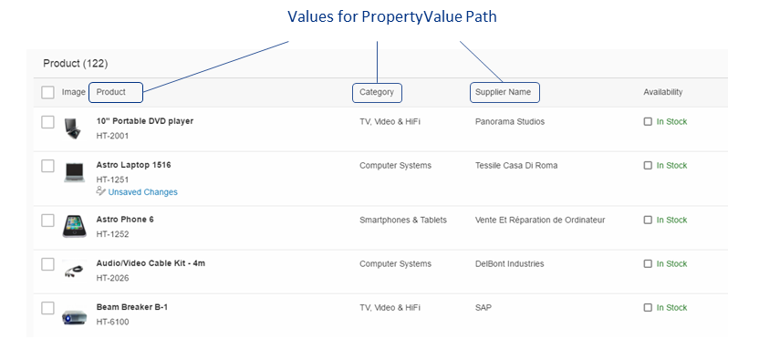

Defining Line Items
To define the line items of a table, use com.sap.vocabularies.UI.v1.LineItem as shown in the code samples below. The rendering result is as follows:

List Report: LineItem of Root EntitySetThis video shows the step-by-step procedure for adding line items to a list report table:
Disclaimer: The below video  is not part of the SAP product documentation. Please read the legal disclaimer for video links before viewing this video.
is not part of the SAP product documentation. Please read the legal disclaimer for video links before viewing this video.
is not part of the SAP product documentation. Please read the legal disclaimer for video links before viewing this video.
Code Samples
Root entitySet in
manifest.json
"pages: [
{
"entitySet": "SEPMRA_C_PD_Product",
"component": {
"name": "sap.suite.ui.generic.template.ListReport",
"list": true
},
Annotation XML: Determining Column
Names
...
<Annotation Term="UI.LineItem">
<Collection>
<RecordType="UI.DataField">
<PropertyValue Property="Value" Path="Product"/>
<Annotation Term="UI.Importance" EnumMember="UI.ImportanceType/High"/>
</Record>
<RecordType="UI.DataField">
<PropertyValue Property="Value" Path="ProductCategory"/>
<Annotation Term="UI.Importance" EnumMember="UI.ImportanceType/High"/>
</Record>
<RecordType="UI.DataField">
<PropertyValue Property="Value" Path="Supplier"/>
<Annotation Term="UI.Importance" EnumMember="UI.ImportanceType/High"/>
</Record>
</Collection>
</Annotation>
More Information
For information about adding actions for line items in the list report view, see Enabling Actions in the List Report.
For information about responsiveness options in tables, see Responsiveness Options: Example.